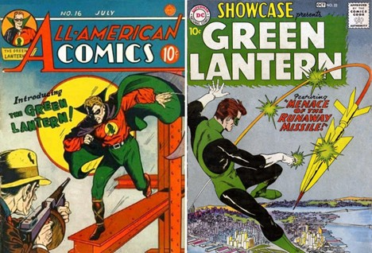

From Pulp to Power Rings: A Hero Reimagined
The original Green Lantern, Alan Scott, debuted in 1940 during the Golden Age of Comics, a time when mystical powers, clear-cut heroes, and pulp-style stories dominated. Scott’s magic lantern and standalone justice reflected a world looking for hope during war and recovery.
But by the late 1950s, readers wanted science, not sorcery.
DC Comics responded with a total reinvention. In 1959, Hal Jordan took up the mantle in Showcase #22, this time as a test pilot chosen by a dying alien to join the intergalactic Green Lantern Corps. His ring wasn’t magical; it was high-tech, fueled by willpower and recharged like a battery.
This transformation marked a shift in superhero storytelling, from myth to science fiction, from individual fantasy to cosmic responsibility, mirroring America’s growing fascination with space, logic, and structure in the Silver Age.